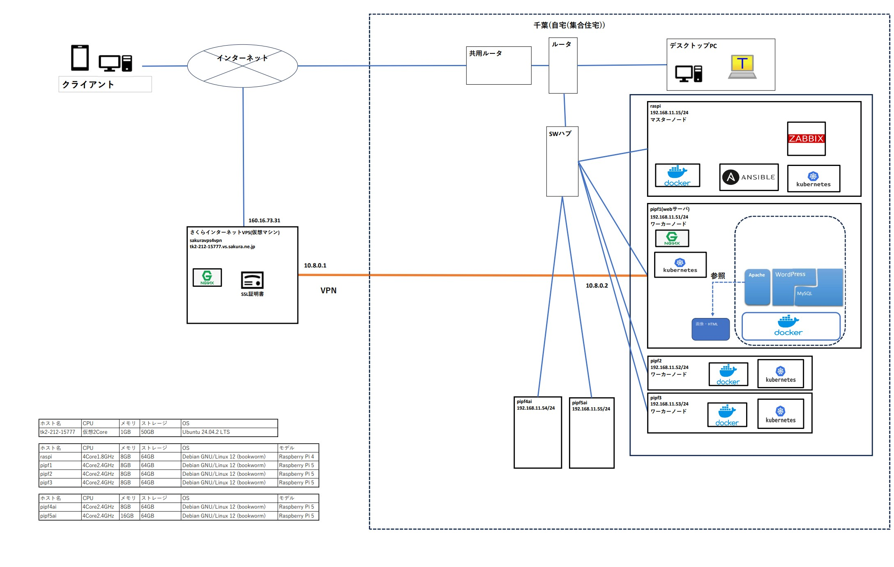
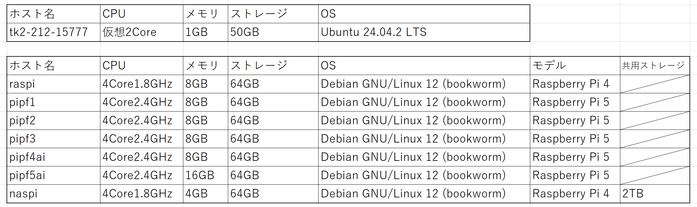

1. システム全体の構成図
以下は、自宅ネットワーク内で構築したシステム全体の構成図です。各ノードの役割や接続関係を視覚的に示しています。
2. ノード一覧と役割
- raspi： Raspberry Pi 4 + Ansible + Zabbix + Kubernetesを用いたシステムの監視、管理
- pipf1： 外部公開用本番WEBサーバ、Docker上にApache、WordPressなどを構築
- pipf2： Docker上にWordPressなどを構築
- pipf3： Dockerはあるがコンテナの構築は未定、Apt-Cacher NGを導入し他のノードのアップデートの高速化に貢献
- pipf4ai： AIアクセラレータを搭載(Hailo-8L,13TOPS)、今後活用予定
- pipf5ai： AIアクセラレータを搭載(Hailo-8,26TOPS)、メモリ16GB搭載,ローカルLLM実行ノード
- tk2-212-15777： さくらインターネットで利用しているVPS、外部公開用のNginx＋VPN終端
- ※TOPS→1TOPSで1兆回の演算が可能 
3. 利用技術と構成マップ
本システムで利用している主な技術は以下のとおりです。
- Docker： WordPressやApacheなどをコンテナ化して運用
- Ansible： 各ノードの初期構築・アップデートを自動化
- Kubernetes： 軽量クラスタの構築に挑戦中
- Zabbix： サーバ監視（CPU, メモリ, 死活, etc）
- OpenVPN： VPS⇔自宅間のセキュア接続
- LLM（Large Language Models）：大規模言語モデル